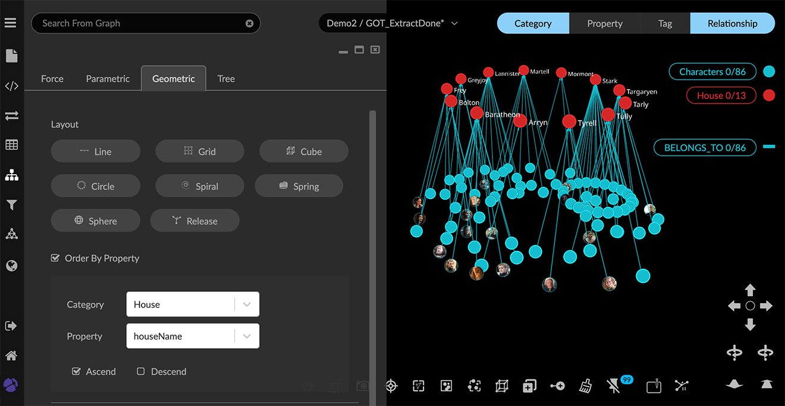

Using Geometric Layouts Geometric layouts let you arrange all nodes or selected nodes in a Line, Grid, Cube, Circle, Sphere, Spiral, or Spring ordered by one of the property values in the data. The edges between nodes continue to be displayed. In addition, you can: Distribute selected nodes in an X, Y, or Z direction ordered by a property value. This is useful for grouping data by date and time or other numerical or categorical property values. Align nodes along the virtual X, Y, and Z axes of the project space. Rotate, Scale, and Shift nodes in the project space by specified amounts. This provides fine control of layouts to craft compelling visualizations. Apply Ring or Tree layouts around selected central nodes, and specify the depth of the hierarchy and the relative length of the edges. You can combine layouts in a variety of ways. The layout shown above uses a Grid layout for one of the categories of nodes (Location), and then applies a Ring layout to the nodes of a different category (Photos) which are connected by one edge to the nodes in the grid. Layouts can’t be reverted easily, so make a habit of saving Snapshots or data Views as you work. To share a static image of a layout, you can click the Take Screenshot icon in the toolbar. It downloads a .png screenshot of the project space that includes just the data and the legend (not the toolbar, panel menu, panel or any other UI elements). Applying a geometric layout You can apply one of the named geometric layouts, either to all the data or to any selection. In the example layout above, nodes for each category are displayed in a different geometry. To apply a geometric layout: Open the Layout panel and Geometric tab. Select nodes to lay out using any method. Often, you’ll want to use the lists in the legend to select all the nodes of a given category or tag. If no nodes are selected, the layout is applied to all the data. Now click the Line, Grid, Cube, Circle, Sphere, Spiral, or Spring button to display the data in that layout. The nodes are still selected after you apply the layout. You can move them as group and further adjust the orientation, size, and position using Rotate, Scale, and Shift layout controls. + WARNING: Be aware that the Release button on the Layout panel will release any pinned nodes and return the entire graph to a force layout, regardless of whether any nodes are selected. This action cannot be undone. To avoid losing useful layouts by mistake, save data Views or take Snapshots regularly as you work. Ordering nodes in a geometric layout by a property value One of the property values in the data you select can be used to order the nodes in a geometric layout. To order a geometric layout by a property value: Select nodes to be ordered. For example, use the legend to select all nodes of a given category. In the Layout section, click the Order by property checkbox to display its Category and Property dropdown menus. Select the category and property name you want. Click the Ascend or Descend checkbox to display the nodes in either ascending or descending order. Click a geometric layout button to apply it (i.e. Line, Grid, Cube, Circle, Sphere, Spiral, or Spring.)  Distributing nodes by a property value Distribution uses one of the property values available in a selection of data to group the nodes and distribute the groups in the project space along the X, Y, or Z direction. With Distribution, you can group data quickly by any date, numerical or categorical property available in your data. This helps highlight patterns quickly and makes it easier to select groups of nodes for further inspection, labeling, and analysis. To distribute nodes by a property value: Select nodes to to be grouped and distributed, for example, using the legend to select all nodes of a given category. Click the Spread Out checkbox to enter a scale Range by which the groups of nodes will be distributed in the graph space. Click the Distribution option’s Order by Property checkbox to display Category and Property dropdown menus. Select the category and property you want. Click the Ascend or Descend checkbox to display the distributed groups in either ascending or descending order. Click either Number, Date, or Categorical checkboxes, depending on the value of the property you selected. Now click the X, Y, or Z button to group and distribute the selected data. In the example, we’ve chosen to group Photos nodes by their Ratings property values (1 to 5), and to distribute the groups on the X axis. You can further adjust distributed groups using Rotate, Scale, and Shift layout controls. Nodes that are grouped and distributed are pinned in the graph space. So if the distribution isn’t quite what you want, simply press the Release toolbar icon (or Ctrl+P) to start over. Aligning nodes The Align option projects the selected (or all) nodes onto the remaining axes. For example, click X to project nodes to the Y and Z axes. If you click two of the buttons, for example, X and Z, the nodes are projected onto the Y axis, in a line. Align is useful for organizing and separating data into specific groupings. In the example below, Location nodes, and distributed Photo nodes grouped by Rating are all projected onto an X axis (and the Location nodes moved up using left-click-drag). If you click all three buttons, the nodes are stacked on top of one another at the origin viewpoint. While they are still selected, you can click one of the Layout options to unstack them. You can also click the Release button in the Layout section to return them to a force layout. Using the Rotate, Scale, and Shift layout controls You can move the nodes in a layout as a group, and you can further adjust the orientation, size, and position using Rotate, Scale, and Shift layout controls. You can select any group of nodes. If no data are selected, the controls operate on all the data. You can: Rotate separately along the X, Y, or Z axes, for fine-tuned control of 3D orientation. Enter a number of degrees to rotate the layout (either a positive or negative value), then click Rotate X, Rotate Y, or Rotate Z buttons. Scale a selection (or the entire layout). You can either expand or contract the scale, and choose to scale along X, Y, and/or Z axes as well. Enter a Scale factor, select axes using the checkboxes, then click Expand or Contract. For example, you can expand the scale for data displayed in a line, and contract the scale for other data displayed in circles or grids. Shift data on the X, Y, or Z axis to separate selected data visually in the graph space. Enter a Shift factor (either a positive or negative value) and click X, Y, or Z. Using Ring or Tree hierarchical layouts With Ring or Tree hierarchical layouts, you select a node (or nodes) as central points, and neighboring nodes are automatically arranged according to the number of edges away they are from the centers. Ring or tree hierarchies can greatly aid visualization when combined with another geometric layout, such as the following Grid layout: They are also useful for geospatial display since the rings or trees persist when central data nodes with lat-long coordinates are dropped onto the map. You can: Set the Ego Depth of the hierarchy (i.e. the number hops from the selected central nodes to include). The default depth of 100 will typically include all the data since a depth of 100 connections will cover most graphs. For example, with an Ego depth of 3, nodes NOT selected as centers AND three edges away are included. Nodes further away remain in the original force layout. Set the relative Length of the connecting edges. The default length of 0.4 is suitable for many graphs. Order the data in rings or trees by a property value. Orient rings or trees using Left, Right, Up or Down checkboxes. To display a hierarchical ring layout: Select nodes of primary interest as your center nodes. In this example from a contact tracing dataset, we select all Infected_Person nodes, laid out in a grid ordered by the number of connections for each node. Now scroll down to the Scale option and click the Expand button several times to expand the grid layout. This makes room to arrange first- and second- level contacts in rings around the central nodes. With the central Infected_Person nodes still selected, click the Ring button. With the default Ego depth of 100, nodes NOT selected as centers AND 100 edges away are displayed in concentric rings around the central nodes. You can adjust the display further using Left, Right, Up, or Down checkboxes. Click one of the checkboxes, then click Rings to rotate or reflect the connected rings. To display a hierarchical tree layout: Select nodes of primary interest as your central nodes. In this example from a contact tracing dataset, we select all Infected_Person nodes, laid out in a grid ordered by the number of connections for each node. Scroll down to the Scale option and click the Expand button several times to expand the grid. This makes room to arrange first- and second- level contacts in trees connected to the central nodes. With Infected_Person nodes still selected, click Trees to see a tree layout for nodes the default 100 edges away from the selected nodes. You can adjust the layout further using Left, Right, Up, or Down checkboxes. Click one of the checkboxes (for example, Right), then with your central nodes selected, click Trees to see the layout to the left of the central nodes. Now click the Up checkbox and click Trees again. The tree layouts now appear above the central nodes, rather than to the left of them. Using Quick Layouts The Quick Layout toolbar icon displays a menu that lets you quickly apply and modify pre-set geometric layouts to all or part of your data. This menu is also provided on the right-click context menu under Layout. You can select items on the menu to: Apply a Line, Grid, Cube, Circle, Spiral, or Spring layout to any selection of nodes. Apply a Ring or Tree hierarchical layout. You can select central nodes first, but it is not required. If you apply the layout to all the data, GraphXR will determine the nodes most likely to be central. For simpler graph patterns, selecting central nodes first may not make a difference. Expand or Contract the layout of any selection of nodes. With Quick Layout you cannot order nodes by property value, distribute nodes, specify controlled Shift or Rotate actions, or enter specifications for a Ring or Tree layout. You can, however, reposition selected nodes using navigation controls (e.g left-click drag to shift or right-click drag to rotate.) To create a Quick Layout: Select nodes using any selection method and click the Quick Layout toolbar icon to display the quick layout menu. Select one of the quick layout options (for example Line). With the nodes still selected, you can click Expand or Contract on the menu to adjust the size of the layout. If you need to make room for hierarchical rings or trees in an initial geometric layout, expand the layout first, then apply the additional hierarchical layout. With the nodes still selected, choose Ring or Tree. Selecting Expand or Contract in the above ring layout expands only the layout of the selected central nodes, not the rings.